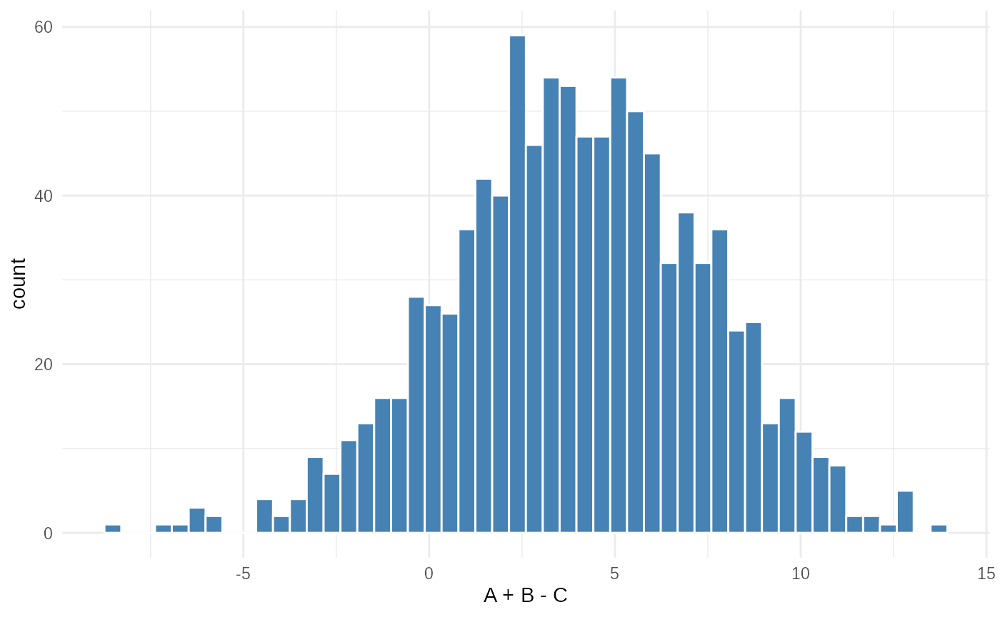
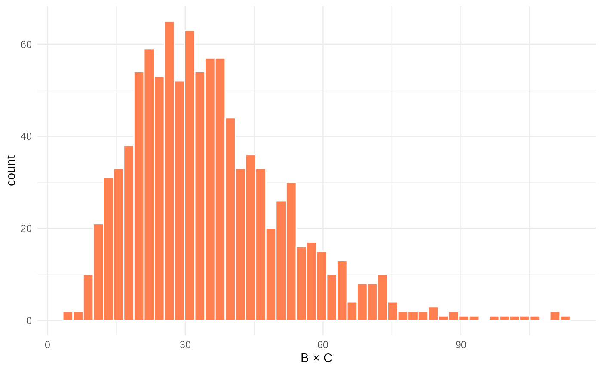
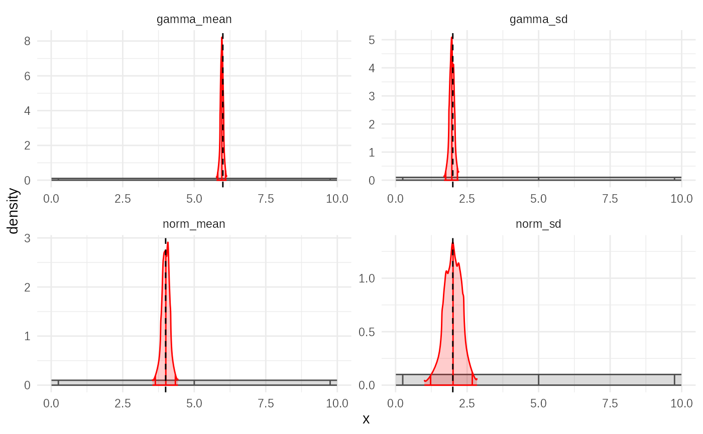
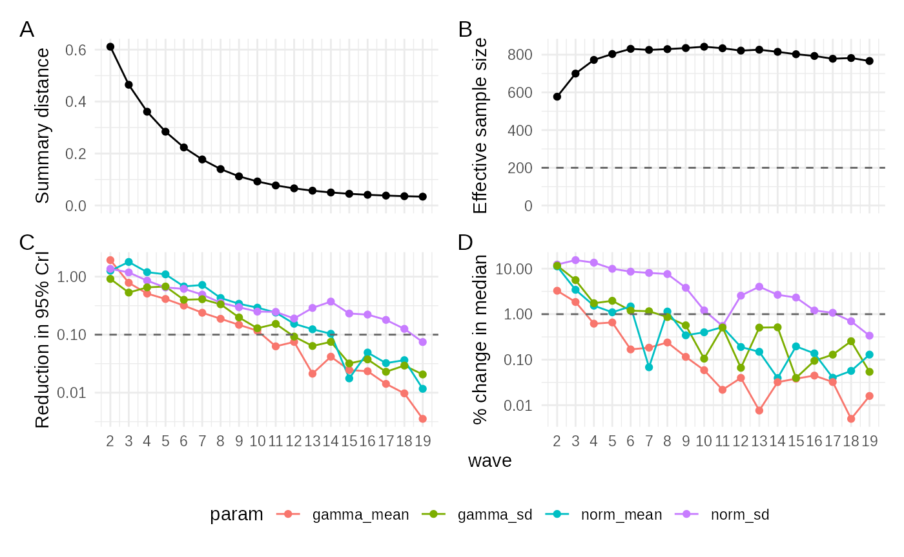
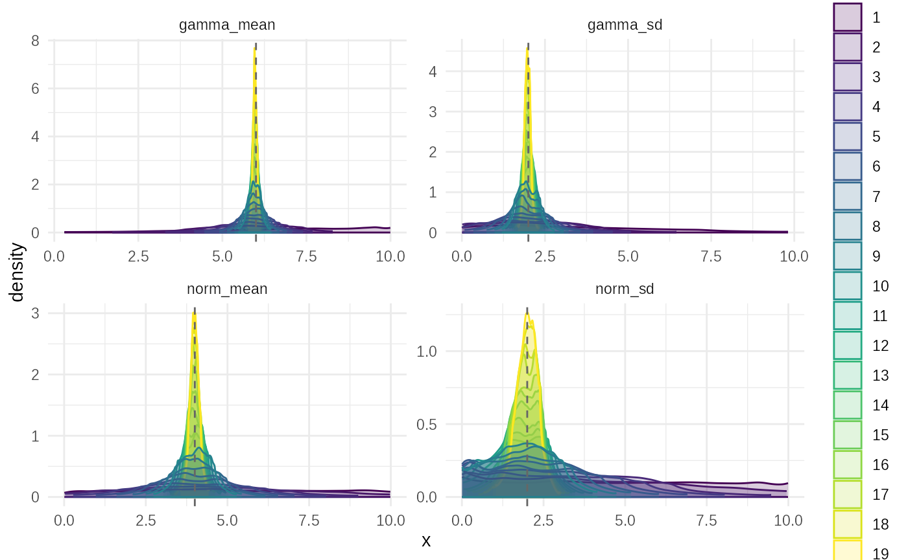
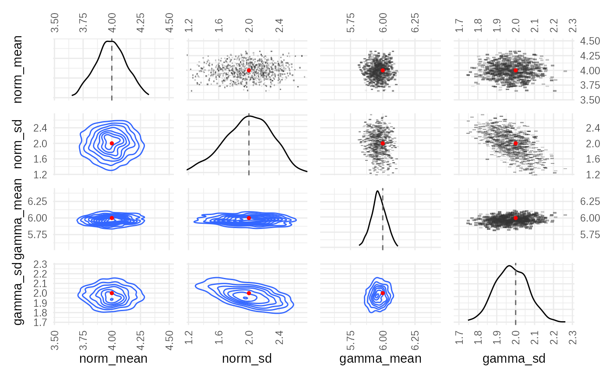

library(tidyabc)
#>
#> Attaching package: 'tidyabc'
#> The following objects are masked from 'package:base':
#>
#> transform, truncate
library(dplyr)
#>
#> Attaching package: 'dplyr'
#> The following objects are masked from 'package:stats':
#>
#> filter, lag
#> The following objects are masked from 'package:base':
#>
#> intersect, setdiff, setequal, union
library(ggplot2)
ggplot2::set_theme(theme_minimal())Introduction
This vignette demonstrates the Approximate Bayesian
Computation Sequential Monte Carlo (ABC-SMC) algorithm using
tidyabc. ABC-SMC is an iterative refinement method that
improves upon basic rejection sampling by using information from
previous “waves” to guide the search for plausible parameters. This
typically requires far fewer simulations than rejection sampling to
achieve a similar posterior approximation, making it more efficient for
complex models.
This example builds upon the model defined in the “Getting started”
vignette, using the same simulation function
(test_simulation_fn), scoring function
(test_scorer_fn), priors (test_priors), and
observed data (test_obsdata).
Step 1: Define the Model and Data (Recap)
We reuse the same model and data from the “Getting started” vignette:
-
Simulation Function
(
test_simulation_fn): Generates synthetic datadata1anddata2based on four parameters (norm_mean,norm_sd,gamma_mean,gamma_sd). -
Scoring Function (
test_scorer_fn): Calculates the Wasserstein distance between simulated and observed data fordata1anddata2. -
Priors (
test_priors): Uniform distributions for each parameter, with a constraintgamma_mean > gamma_sd. -
Observed Data (
test_obsdata): Generated usingnorm_mean = 4,norm_sd = 2,gamma_mean = 6,gamma_sd = 2.
# example simulation
# Well be trying to recover norm and gamma parameters
# We'll use this function for both example generation and fitting
test_simulation_fn = function(norm_mean, norm_sd, gamma_mean, gamma_sd) {
A = rnorm(1000, norm_mean, norm_sd)
B = rgamma2(1000, gamma_mean, gamma_sd)
C = rgamma2(1000, gamma_mean, gamma_sd)
return(
list(
data1 = A + B - C,
data2 = B * C
)
)
}
test_scorer_fn = function(simdata, obsdata) {
return(list(
data1 = calculate_wasserstein(simdata$data1, obsdata$data1),
data2 = calculate_wasserstein(simdata$data2, obsdata$data2)
))
}
tmp = test_simulation(
test_simulation_fn,
test_scorer_fn,
norm_mean = 4, norm_sd=2, gamma_mean=6, gamma_sd=2,
seed = 123
)
truth = tmp$truth
test_obsdata = tmp$obsdata
test_priors = priors(
norm_mean ~ unif(0, 10),
norm_sd ~ unif(0, 10),
gamma_mean ~ unif(0, 10),
gamma_sd ~ unif(0, 10),
# enforces convex gamma:
~ gamma_mean > gamma_sd
)
ggplot(
tibble(data1 = test_obsdata$data1), aes(x=data1))+
geom_histogram(bins=50, fill="steelblue", color="white")+
xlab("A + B - C") +
theme_minimal()
ggplot(tibble(data2 = test_obsdata$data2), aes(x=data2))+
geom_histogram(bins=50, fill="coral", color="white")+
xlab("B × C") +
theme_minimal()
Step 2: Inform Scoring Weights (Optional but Recommended)
Before running SMC, it’s often beneficial to run a small
trial rejection ABC fit to gather information about the
scale and variability of the summary statistics. This helps in setting
appropriate weights (scoreweights) for combining the
distances from different summary statistics, ensuring they contribute
meaningfully to the overall distance metric.
trial_fit = abc_rejection(
obsdata = test_obsdata,
priors_list = test_priors,
sim_fn = test_simulation_fn,
scorer_fn = test_scorer_fn,
n_sims = 1000, # A smaller number for the trial run
acceptance_rate = 0.5 # A high acceptance rate for the trial to get diverse samples
)
#> ABC rejection, 1 wave.
# Calculate metrics, including recommended score weights
metrics = posterior_distance_metrics(trial_fit)
test_scorewt = metrics$scoreweights # Extract the recommended weights
# Print the metrics to see the recommended weights and other diagnostics
metrics
#> $obsscores
#> data1 data2
#> 0 0
#>
#> $simscores
#> NULL
#>
#> $deltascores
#> NULL
#>
#> $means
#> data1 data2
#> 0.986466 1.036007
#>
#> $sds
#> data1 data2
#> 0.4151995 0.4318773
#>
#> $mad
#> data1 data2
#> 0.986466 1.036007
#>
#> $rmsd
#> data1 data2
#> 1.070122 1.122255
#>
#> $cov
#> data1 data2
#> data1 0.17239064 -0.03804698
#> data2 -0.03804698 0.18651799
#>
#> $scoreweights
#> data1 data2
#> 0.5020462 0.4979538The posterior_distance_metrics() function analyzes the
distances from the trial fit. The scoreweights it
calculates (often based on the standard deviation of each summary
statistic divided by its root mean squared deviation from the observed
value) help balance the influence of data1 and
data2 in the Euclidean distance calculation, especially if
they are on different scales. Using these weights in the SMC fit can
improve convergence and accuracy.
Step 3: Run ABC-SMC
Now we execute the ABC-SMC algorithm. Unlike rejection sampling, SMC iteratively refines the parameter estimates.
smc_fit = abc_smc(
obsdata = test_obsdata,
priors_list = test_priors,
sim_fn = test_simulation_fn,
scorer_fn = test_scorer_fn,
n_sims = 1000, # Number of simulations per wave
acceptance_rate = 0.5, # Proportion of particles accepted each wave (affects epsilon decay)
distance_method = "euclidean", # How to combine summary statistic distances
parallel = FALSE, # Disable parallel processing for vignette
scoreweights = test_scorewt # Use the weights calculated from the trial fit
)
#> ABC-SMC
#> SMC waves: ■ 0% | wave 1 ETA: 5m
#> SMC waves: ■ 1% | wave 4 ETA: 5m
#> SMC waves: ■■ 2% | wave 7 ETA: 5m
#> SMC waves: ■■ 3% | wave 11 ETA: 5m
#> SMC waves: ■■ 4% | wave 14 ETA: 5m
#> Converged on wave: 17
#> SMC waves: ■■ 5% | wave 16 ETA: 5m
# Print a summary of the SMC results
summary(smc_fit)
#> ABC SMC fit: 17 waves - (converged)
#> Parameter estimates:
#> # A tibble: 4 × 4
#> # Groups: param [4]
#> param mean_sd median_95_CrI ESS
#> <chr> <chr> <chr> <dbl>
#> 1 gamma_mean 5.966 ± 0.061 5.963 [5.819 — 6.130] 804.
#> 2 gamma_sd 1.978 ± 0.087 1.977 [1.752 — 2.201] 804.
#> 3 norm_mean 4.002 ± 0.133 4.006 [3.659 — 4.359] 804.
#> 4 norm_sd 1.988 ± 0.304 2.002 [1.120 — 2.769] 804.-
n_sims: The number of simulations performed in each wave. -
acceptance_rate: This value (e.g., 0.5) determines how the tolerance threshold (epsilon) decreases. After each wave, epsilon is set to the quantile of distances corresponding to this rate among the current wave’s simulations. A rate of 0.5 means epsilon becomes the median distance of the wave. -
scoreweights: The weights calculated earlier are used here. - The
summaryoutput shows the final posterior statistics (median, IQR, ESS) aggregated across all waves, similar to the rejection sampling output but reflecting the sequential refinement.
Step 4: Visualize the Results
tidyabc provides several plots to understand the SMC
fit. The first is similar to the rejection sampling plot, showing the
final posterior.
plot(smc_fit, truth = truth)
This plot shows the marginal posterior densities for each parameter
estimated after the final SMC wave, compared to the true values
(truth). It should ideally show good agreement, similar to
the rejection sampling result but potentially with higher effective
sample size (ESS) for the same total number of simulations.
Step 5: Diagnose Convergence
The plot_convergence() function is crucial for SMC,
showing how the fit improved over the sequence of waves.
plot_convergence(smc_fit)
This multi-panel plot shows key metrics tracked across waves (wave number on the x-axis):
-
abs_distance: The absolute value of the tolerance threshold (epsilon) for each wave. This represents the “closeness” required for a simulation to be accepted in that wave. In SMC, epsilon typically decreases rapidly (often exponentially) as the algorithm focuses on regions of higher posterior density. The plot should show a clear downward trend, eventually plateauing as the algorithm converges or reaches the resolution limit of the model/data noise. -
ESS(Effective Sample Size): The ESS of the particle set at each wave. A higher ESS indicates a more diverse and informative posterior sample. The ESS often starts low (as the first wave might accept many particles) and then increases as the proposal distribution (based on previous particles) becomes more efficient at finding high-probability regions. It typically plateaus when the algorithm converges. The plot should show an increasing trend, ideally reaching a stable, high value. -
IQR_95_redn(95% CI Reduction): The reduction in the 95% credible interval (IQR) range for each parameter compared to the previous wave. This indicates how much the uncertainty in each parameter estimate is decreasing per wave. It should generally show a declining trend (often roughly linear on this log scale initially), approaching zero as the parameter estimates stabilize. -
rel_mean_change(Relative Mean Change): The relative change in the posterior mean of each parameter from one wave to the next (|mean_t - mean_{t-1}| / |mean_{t-1}|). This tracks the stability of the central parameter estimates. It should also show a declining trend (often roughly linear), approaching zero as the estimates stabilise.
For a successful SMC run, you expect epsilon to drop significantly,
ESS to rise and plateau, and both IQR_95_redn and
rel_mean_change to trend towards zero.
Step 6: Visualize Parameter Evolution
The plot_evolution() function shows how the estimated
parameter distributions change over the waves.
plot_evolution(smc_fit, truth)
This plot displays the posterior density estimates for each
parameter, faceted by wave number. It allows you to visualize how the
algorithm progressively narrows down the plausible parameter space from
the initial prior distributions towards the final posterior, centred
around the truth.
Step 7: Check Parameter Correlations
Finally, plot_correlations() helps understand the
relationships between parameters in the final posterior sample.
plot_correlations(smc_fit$posteriors, truth)
This heatmap shows the correlation coefficients between pairs of
parameters based on the final set of weighted particles. Correlations
can indicate dependencies learned by the model or potential
identifiability issues. Comparing the correlation structure to the
truth values (if applicable) can provide further
insight.
Conclusion
ABC-SMC provides an efficient way to perform Bayesian inference for
models where the likelihood is intractable. By iteratively refining the
parameter proposals based on previous results, it can achieve good
posterior approximations with significantly fewer simulations than basic
rejection sampling. Diagnosing convergence using
plot_convergence() is important to ensure the algorithm has
run for enough waves to stabilize the estimates.